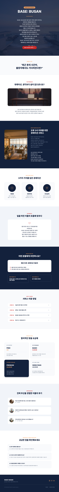

프로젝트 개요
부산의 다양한 공간을 여행자의 취향과 상황에 맞춰 제안하는 로컬 큐레이션 서비스의 상세 페이지 디자인입니다. 서비스 소개부터 큐레이션 방식, 이용 절차와 요금제까지 하나의 흐름으로 구성했습니다.
WEB DESIGN · CURATION SERVICE
부산의 공간과 사람, 취향을 연결해
나에게 맞는 로컬 경험을 제안하는
큐레이션 서비스 웹 디자인입니다.
FULL PAGE DESIGN

PROJECT BRIEF · 2026
부산의 다양한 공간을 여행자의 취향과 상황에 맞춰 제안하는 로컬 큐레이션 서비스의 상세 페이지 디자인입니다. 서비스 소개부터 큐레이션 방식, 이용 절차와 요금제까지 하나의 흐름으로 구성했습니다.
관광 정보를 단순히 나열하기보다 여행자가 부산에서 보내고 싶은 시간과 분위기를 먼저 떠올릴 수 있도록 설계했습니다. 공간 이미지와 간결한 정보 구조를 결합해 서비스의 감성과 기능을 함께 전달하고자 했습니다.
유명 관광지 중심의 여행보다 자신만의 취향이 담긴 로컬 경험을 찾는 20–30대 개별 여행자를 주요 타겟으로 설정했습니다. 맞춤형 큐레이션의 가치와 이용 과정을 직관적으로 보여 주어 서비스에 대한 관심과 이용 의향을 높이는 것이 목적입니다.